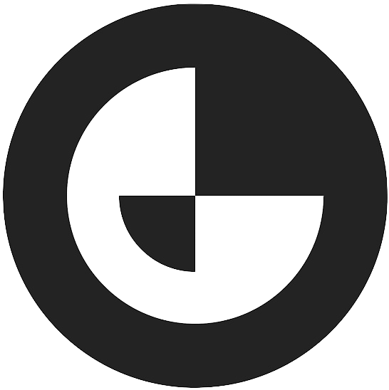

About Me
Hello! I am an informatics PhD student at University of Lisbon specializing in AI for medical imaging. My research interests include Medical Imaging Analysis, Small Vision-Language Models, and Explainable AI. I am passionate about using AI to solve real-world problems and contribute to the field of healthcare.
Career & Research
-
PhD Student (Sep. 2023 – Present)
My PhD focuses on breast cancer diagnosis using multimodal exam imaging, self-supervised learning, and small vision-language models.
We want to be able to incorporate all common breast exam modalities (DM, MRI and US) into a single model. For this we are exploring self-supervised approaches to deal with the costly annotation of multimodal data and small vision-language models to deal with the reduced computational resources available in healthcare institutions, and to make the model more interpretable and efficient.
During this period I have attended: BMVC 2023, and VS3 2024.
-

Junior Data Scientist (Jan. 2023 – Aug. 2023)Continued the work on the user segmentation job, where we enabled custom integrations metrics, improved data distribution across cluster nodes, and optimized feature extraction operations logic. These improvements resulted in cost reductions and a continuous processing of a clickstream of 350 requests per second, with a daily cost of $18.
I also worked on implementing the outbox pattern with Debezium to facilitate the transition of teams to using the streaming platform. This was crucial step to make the ad posting process consistent across all OLX domains.
-
Data Engineer Intern (Jul. 2022 – Jan. 2023)
I was a data engineer intern at OLX Group, where I worked on the streaming team. This included working with Kafka, Flink, and New Relic.
My responsibilities included enhancing the monitoring of the streaming platform and developing a user segmentation job using AWS KDA. One of OLX's revenue streams is sponsored ads. This project enabled us to consume user clickstream data, aggregate it, and create user segments based on their behavior. By doing so, we could target sponsored ads more effectively and make real-time adjustments (instead of the current daily batch) to increase revenue.
-
Master's Degree in Informatics (Sep. 2020 – Mar. 2023)
My masters focused on heavily on data science, shifting from a software prespective. It was during my thesis that I first got into deep learning and computer vision for medical imaging. My thesis was title "Adversarial Representation Learning for Medical Imaging".
Adversarial Representation Learning for Medical Imaging
The access to vast high-quality breast cancer datasets for training deep learning models is a major bottleneck in the development of artificial intelligence systems for medical imaging. For that reason, my dissertation proposed an approach to generate synthetic mammograms based on ConSinGAN. The main goal was to create a large and diverse dataset of mammograms where samples are generated from a single mammogram image. This allows to exploit extremely small datasets and scale them to a larger size without recurring to traditional data augmentation techniques and therefore have more variability. Making use of the same model, we also propose a simple mechanism to extract a tumour from a malign mammogram and insert it into a healthy mammogram, for additional data augmentation. We used the Digital Database for Screening Mammography (DDSM) dataset, and validated through a simple classifier that this additional data increase model performance. Check the code here.
-
Bachelor's Degree in Informatics (Sep. 2017 – Jun. 2020)
Bachelor's degree in Informatics at University of Lisbon, where I learned the basics of computer science and software development. I also took an introductory course in machine learning.
Publications
-
AI in Breast Cancer Imaging: A Survey of Different Applications, Journal of
Imaging, MDPI, 2022
João Mendes, José Domingues, Helena Aidos, Nuno Garcia, and Nuno Matela
View Publication
Teaching
- Programming Introduction – Java (Sep. 2023 – Jan. 2024)
- Operating Systems – C (Feb. 2023 – Jul. 2024)
Contact
If you'd like to get in touch, please email me at jddomingues@fc.ul.pt.